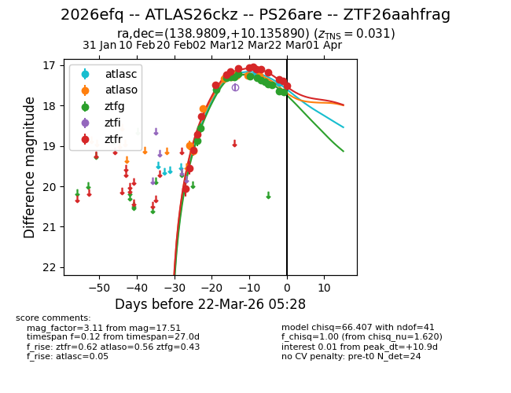
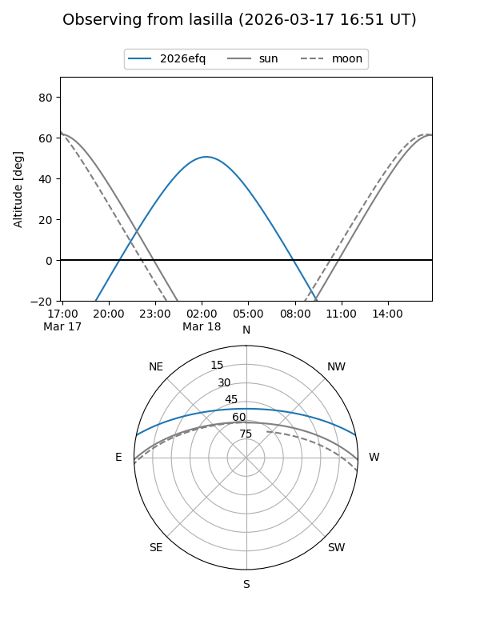
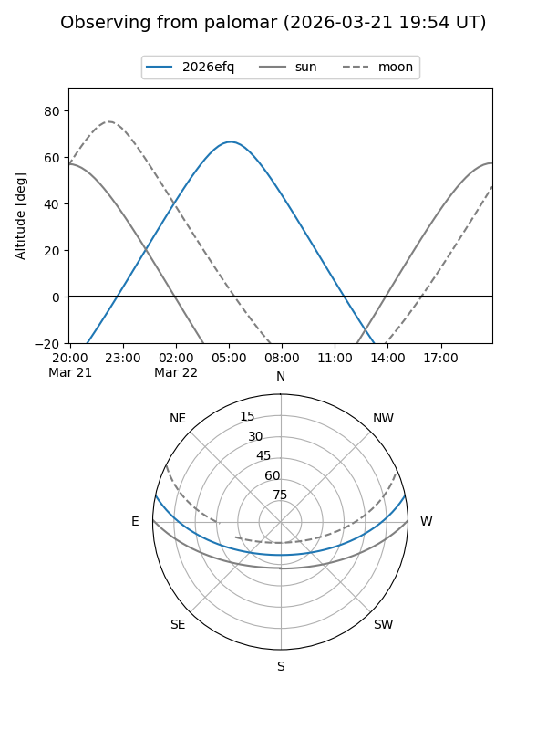
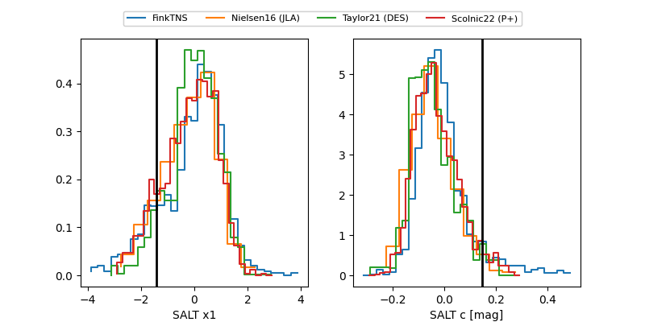

2026efq
Target 2026efq at 2026-03-22 05:30
Aliases and brokers:
FINK: link
Lasair: link
ALeRCE: link
TNS: link
YSE: link
alt names
ZTF26aahfrag (ztf,fink_ztf)
2026efq (tns,yse)
ATLAS26ckz (atlas)
PS26are (panstarrs)
Coordinates:
equatorial (ra, dec) = 138.9809,+10.13589
equatorial (HMS+DMS) = 09:15:55.41,+10:08:09.20
galactic (l, b) = (220.6654,+36.63419)
Flags:
confirmed ia
Photometry:
last atlasc=17.43, atlaso=17.26, ztfg=17.67, ztfr=17.51
2 atlasc, 10 atlaso, 15 ztfg, 17 ztfr detections
Lightcurve

Visibility


Additional plots
